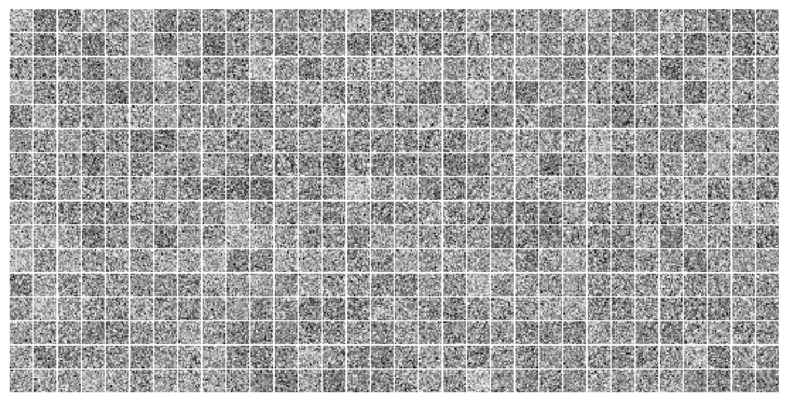

(22) lightening play#
project = iP-VAE, host = chewie, device = cuda:0
Motivation:
Show code cell source
# HIDE CODE
import os, sys
from IPython.display import display
# tmp & extras dir
git_dir = os.path.join(os.environ['HOME'], 'Dropbox/git')
extras_dir = os.path.join(git_dir, 'jb-progress-2025/_extras')
fig_base_dir = os.path.join(git_dir, 'jb-progress-2025/figs')
tmp_dir = os.path.join(git_dir, 'jb-progress-2025/tmp')
# GitHub
sys.path.insert(0, os.path.join(git_dir, 'IterativeVAE'))
from figures.convergence import plot_convergence
from figures.imgs import plot_weights
from figures.fighelper import *
from main.train import *
# warnings, tqdm, & style
warnings.filterwarnings('ignore', category=DeprecationWarning)
warnings.filterwarnings('ignore', category=FutureWarning)
warnings.filterwarnings('ignore', category=UserWarning)
from rich.jupyter import print
%matplotlib inline
set_style()
device_idx = 0
device = f'cuda:{device_idx}'
print(f"device: {device} ——— host: {os.uname().nodename}")
device: cuda:0 ——— host: chewie
from lite.ipvae import LiteIPVAE
from base.dataset import make_dataloader
import pytorch_lightning as pl
from pytorch_lightning.loggers import WandbLogger
from pytorch_lightning.callbacks import ModelCheckpoint
project_dir = add_home('Projects/PoissonVAE')
os.makedirs(project_dir, exist_ok=True)
print(sorted(os.listdir(project_dir)))
['litmodels', 'models', 'results', 'runs', 'wandb']
chkpt_dir = pjoin(project_dir, 'litmodels')
os.makedirs(chkpt_dir, exist_ok=True)
print(sorted(os.listdir(chkpt_dir)))
[]
wandb_logger = WandbLogger(
project='ipvae-lite',
name='yateslab',
save_code=True,
save_dir=project_dir,
)
trainer = pl.Trainer(
max_epochs=50,
gradient_clip_val=200.0,
logger=wandb_logger,
accelerator='gpu',
devices=[device_idx],
callbacks=[ModelCheckpoint(dirpath='./checkpoints')],
)
GPU available: True (cuda), used: True
TPU available: False, using: 0 TPU cores
HPU available: False, using: 0 HPUs
# import torch
# torch.set_float32_matmul_precision('medium')
dl_trn, dl_vld = make_dataloader('vH16-wht', device, batch_size=10)
ipvae = LiteIPVAE(
t_train=10,
beta_kl=10.0,
input_dim=256,
latent_dim=512,
recon_mode='mse',
)
trainer.fit(ipvae, dl_trn)
You are using a CUDA device ('NVIDIA RTX 6000 Ada Generation') that has Tensor Cores. To properly utilize them, you should set `torch.set_float32_matmul_precision('medium' | 'high')` which will trade-off precision for performance. For more details, read https://pytorch.org/docs/stable/generated/torch.set_float32_matmul_precision.html#torch.set_float32_matmul_precision
wandb: ERROR Failed to detect the name of this notebook. You can set it manually with the WANDB_NOTEBOOK_NAME environment variable to enable code saving.
wandb: Currently logged in as: vafaii (yateslab) to https://api.wandb.ai. Use `wandb login --relogin` to force relogin
Tracking run with wandb version 0.19.11
Run data is saved locally in
/home/hadi/Projects/PoissonVAE/wandb/run-20250522_170541-2rcanzt1 View project at https://wandb.ai/yateslab/ipvae-lite
Loading `train_dataloader` to estimate number of stepping batches.
LOCAL_RANK: 0 - CUDA_VISIBLE_DEVICES: [0,1]
| Name | Type | Params | Mode
-------------------------------------------------
0 | core_model | CoreIPVAE | 132 K | train
-------------------------------------------------
132 K Trainable params
0 Non-trainable params
132 K Total params
0.529 Total estimated model params size (MB)
2 Modules in train mode
0 Modules in eval mode
Detected KeyboardInterrupt, attempting graceful shutdown ...
---------------------------------------------------------------------------
KeyboardInterrupt Traceback (most recent call last)
File ~/anaconda3/lib/python3.11/site-packages/pytorch_lightning/trainer/call.py:48, in _call_and_handle_interrupt(trainer, trainer_fn, *args, **kwargs)
47 return trainer.strategy.launcher.launch(trainer_fn, *args, trainer=trainer, **kwargs)
---> 48 return trainer_fn(*args, **kwargs)
50 except _TunerExitException:
File ~/anaconda3/lib/python3.11/site-packages/pytorch_lightning/trainer/trainer.py:599, in Trainer._fit_impl(self, model, train_dataloaders, val_dataloaders, datamodule, ckpt_path)
593 ckpt_path = self._checkpoint_connector._select_ckpt_path(
594 self.state.fn,
595 ckpt_path,
596 model_provided=True,
597 model_connected=self.lightning_module is not None,
598 )
--> 599 self._run(model, ckpt_path=ckpt_path)
601 assert self.state.stopped
File ~/anaconda3/lib/python3.11/site-packages/pytorch_lightning/trainer/trainer.py:1012, in Trainer._run(self, model, ckpt_path)
1009 # ----------------------------
1010 # RUN THE TRAINER
1011 # ----------------------------
-> 1012 results = self._run_stage()
1014 # ----------------------------
1015 # POST-Training CLEAN UP
1016 # ----------------------------
File ~/anaconda3/lib/python3.11/site-packages/pytorch_lightning/trainer/trainer.py:1056, in Trainer._run_stage(self)
1055 with torch.autograd.set_detect_anomaly(self._detect_anomaly):
-> 1056 self.fit_loop.run()
1057 return None
File ~/anaconda3/lib/python3.11/site-packages/pytorch_lightning/loops/fit_loop.py:216, in _FitLoop.run(self)
215 self.on_advance_start()
--> 216 self.advance()
217 self.on_advance_end()
File ~/anaconda3/lib/python3.11/site-packages/pytorch_lightning/loops/fit_loop.py:455, in _FitLoop.advance(self)
454 assert self._data_fetcher is not None
--> 455 self.epoch_loop.run(self._data_fetcher)
File ~/anaconda3/lib/python3.11/site-packages/pytorch_lightning/loops/training_epoch_loop.py:150, in _TrainingEpochLoop.run(self, data_fetcher)
149 try:
--> 150 self.advance(data_fetcher)
151 self.on_advance_end(data_fetcher)
File ~/anaconda3/lib/python3.11/site-packages/pytorch_lightning/loops/training_epoch_loop.py:320, in _TrainingEpochLoop.advance(self, data_fetcher)
318 if trainer.lightning_module.automatic_optimization:
319 # in automatic optimization, there can only be one optimizer
--> 320 batch_output = self.automatic_optimization.run(trainer.optimizers[0], batch_idx, kwargs)
321 else:
File ~/anaconda3/lib/python3.11/site-packages/pytorch_lightning/loops/optimization/automatic.py:192, in _AutomaticOptimization.run(self, optimizer, batch_idx, kwargs)
187 # ------------------------------
188 # BACKWARD PASS
189 # ------------------------------
190 # gradient update with accumulated gradients
191 else:
--> 192 self._optimizer_step(batch_idx, closure)
194 result = closure.consume_result()
File ~/anaconda3/lib/python3.11/site-packages/pytorch_lightning/loops/optimization/automatic.py:270, in _AutomaticOptimization._optimizer_step(self, batch_idx, train_step_and_backward_closure)
269 # model hook
--> 270 call._call_lightning_module_hook(
271 trainer,
272 "optimizer_step",
273 trainer.current_epoch,
274 batch_idx,
275 optimizer,
276 train_step_and_backward_closure,
277 )
279 if not should_accumulate:
File ~/anaconda3/lib/python3.11/site-packages/pytorch_lightning/trainer/call.py:176, in _call_lightning_module_hook(trainer, hook_name, pl_module, *args, **kwargs)
175 with trainer.profiler.profile(f"[LightningModule]{pl_module.__class__.__name__}.{hook_name}"):
--> 176 output = fn(*args, **kwargs)
178 # restore current_fx when nested context
File ~/anaconda3/lib/python3.11/site-packages/pytorch_lightning/core/module.py:1302, in LightningModule.optimizer_step(self, epoch, batch_idx, optimizer, optimizer_closure)
1278 r"""Override this method to adjust the default way the :class:`~pytorch_lightning.trainer.trainer.Trainer` calls
1279 the optimizer.
1280
(...)
1300
1301 """
-> 1302 optimizer.step(closure=optimizer_closure)
File ~/anaconda3/lib/python3.11/site-packages/pytorch_lightning/core/optimizer.py:154, in LightningOptimizer.step(self, closure, **kwargs)
153 assert self._strategy is not None
--> 154 step_output = self._strategy.optimizer_step(self._optimizer, closure, **kwargs)
156 self._on_after_step()
File ~/anaconda3/lib/python3.11/site-packages/pytorch_lightning/strategies/strategy.py:239, in Strategy.optimizer_step(self, optimizer, closure, model, **kwargs)
238 assert isinstance(model, pl.LightningModule)
--> 239 return self.precision_plugin.optimizer_step(optimizer, model=model, closure=closure, **kwargs)
File ~/anaconda3/lib/python3.11/site-packages/pytorch_lightning/plugins/precision/precision.py:123, in Precision.optimizer_step(self, optimizer, model, closure, **kwargs)
122 closure = partial(self._wrap_closure, model, optimizer, closure)
--> 123 return optimizer.step(closure=closure, **kwargs)
File ~/anaconda3/lib/python3.11/site-packages/torch/optim/optimizer.py:484, in Optimizer.profile_hook_step.<locals>.wrapper(*args, **kwargs)
480 raise RuntimeError(
481 f"{func} must return None or a tuple of (new_args, new_kwargs), but got {result}."
482 )
--> 484 out = func(*args, **kwargs)
485 self._optimizer_step_code()
File ~/anaconda3/lib/python3.11/site-packages/torch/optim/optimizer.py:89, in _use_grad_for_differentiable.<locals>._use_grad(self, *args, **kwargs)
88 torch._dynamo.graph_break()
---> 89 ret = func(self, *args, **kwargs)
90 finally:
File ~/anaconda3/lib/python3.11/site-packages/torch/optim/adamax.py:130, in Adamax.step(self, closure)
129 with torch.enable_grad():
--> 130 loss = closure()
132 for group in self.param_groups:
File ~/anaconda3/lib/python3.11/site-packages/pytorch_lightning/plugins/precision/precision.py:110, in Precision._wrap_closure(self, model, optimizer, closure)
109 closure_result = closure()
--> 110 self._after_closure(model, optimizer)
111 return closure_result
File ~/anaconda3/lib/python3.11/site-packages/pytorch_lightning/plugins/precision/precision.py:88, in Precision._after_closure(self, model, optimizer)
87 call._call_callback_hooks(trainer, "on_before_optimizer_step", optimizer)
---> 88 call._call_lightning_module_hook(trainer, "on_before_optimizer_step", optimizer)
89 self._clip_gradients(
90 model,
91 optimizer,
92 trainer.gradient_clip_val,
93 gradient_clip_algorithm=trainer.gradient_clip_algorithm,
94 )
File ~/anaconda3/lib/python3.11/site-packages/pytorch_lightning/trainer/call.py:176, in _call_lightning_module_hook(trainer, hook_name, pl_module, *args, **kwargs)
175 with trainer.profiler.profile(f"[LightningModule]{pl_module.__class__.__name__}.{hook_name}"):
--> 176 output = fn(*args, **kwargs)
178 # restore current_fx when nested context
File ~/Dropbox/git/IterativeVAE/lite/ipvae.py:138, in NotWorkingIPVAE.on_before_optimizer_step(self, optimizer)
137 def on_before_optimizer_step(self, optimizer):
--> 138 norms = grad_norm(self, norm_type=2)
139 total_norm = norms.get('grad_2.0_norm_total', 0.0)
File ~/anaconda3/lib/python3.11/site-packages/lightning/pytorch/utilities/grads.py:51, in grad_norm(module, norm_type, group_separator)
50 if norms:
---> 51 total_norm = torch.tensor(list(norms.values())).norm(norm_type)
52 norms[f"grad_{norm_type}_norm_total"] = total_norm
KeyboardInterrupt:
During handling of the above exception, another exception occurred:
NameError Traceback (most recent call last)
Cell In[11], line 1
----> 1 trainer.fit(ipvae, dl_trn)
File ~/anaconda3/lib/python3.11/site-packages/pytorch_lightning/trainer/trainer.py:561, in Trainer.fit(self, model, train_dataloaders, val_dataloaders, datamodule, ckpt_path)
559 self.training = True
560 self.should_stop = False
--> 561 call._call_and_handle_interrupt(
562 self, self._fit_impl, model, train_dataloaders, val_dataloaders, datamodule, ckpt_path
563 )
File ~/anaconda3/lib/python3.11/site-packages/pytorch_lightning/trainer/call.py:65, in _call_and_handle_interrupt(trainer, trainer_fn, *args, **kwargs)
63 if isinstance(launcher, _SubprocessScriptLauncher):
64 launcher.kill(_get_sigkill_signal())
---> 65 exit(1)
67 except BaseException as exception:
68 _interrupt(trainer, exception)
NameError: name 'exit' is not defined
self = ipvae.core_model
w = tonp(self.dec.weight.data)
w = w.T.reshape(-1, 16, 16)
w.shape
(512, 16, 16)
plot_weights(w);

y = self.dec(self.samples)
self.samples.shape, y.shape
(torch.Size([200, 512]), torch.Size([200, 256]))
self.dec.weight.data
tensor([[ 0.4459, 1.8236, -0.0636, ..., 0.5143, 2.1891, -0.4013],
[ 0.0668, -1.4438, -1.4960, ..., -0.1500, -1.4424, 0.5232],
[-0.0601, -1.2109, 0.6898, ..., 1.3435, 0.5855, -1.0559],
...,
[ 1.3908, -0.5595, -0.7890, ..., -0.0838, -0.4125, 0.1302],
[ 0.7800, 0.0071, 0.2925, ..., -1.6118, 0.8042, -0.6821],
[-1.1207, 0.0259, 0.2086, ..., -0.1205, 0.8682, 0.2320]])
# 2. Setup Wandb logger
# 3. Create trainer
trainer = pl.Trainer(
max_epochs=50,
logger=wandb_logger,
accelerator="auto",
)
# 4. Train
trainer.fit(model, your_dataloader)
# 5. Cleanup
wandb.finish()
import pytorch_lightning as pl
from pytorch_lightning.loggers import WandbLogger
import wandb
# Assuming you already have:
# - your_dataloader (training data)
# - LitIPVAE imported
# 1. Initialize model
model = LitIPVAE(
t_train=10,
beta_kl=1.0,
input_dim=784, # adjust to your data
latent_dim=64,
learning_rate=2e-3,
)
# 2. Setup Wandb logger
wandb_logger = WandbLogger(project="ipvae-training")
# 3. Create trainer
trainer = pl.Trainer(
max_epochs=50,
logger=wandb_logger,
accelerator="auto",
)
# 4. Train
trainer.fit(model, your_dataloader)
# 5. Cleanup
wandb.finish()
from main.layers import LinearDictionary
from main.distributions import Normal, Poisson, softclamp_upper, compute_n_exp
import pytorch_lightning as pl
import torch
import torch.nn as nn
import torch.nn.functional as F
from contextlib import contextmanager
class CoreIPVAE(nn.Module):
def __init__(
self,
t_train: int,
input_dim: int,
latent_dim: int,
recon_mode: str = 'prob',
):
super().__init__()
self.t_train = t_train
self.input_dim = input_dim
self.latent_dim = latent_dim
self.recon_mode = recon_mode
self.n_updates = 0
self.time = 0
self.state = None
self.samples = None
self.posterior = None
self.conditional = None
self._init()
def forward(self, x, temp: float = None):
if self.time == 0 or self.state is None:
self.reset_state(len(x))
# (1) perform a single natural gradient update
with self.temporary_temperature(temp):
du = self.infer(x)
# (2) generate from the updated posterior
self.generate()
# (3) compute losses
loss_kl = self.loss_kl(du)
loss_recon = self.loss_recon(x)
loss = ...
return loss
def infer(self, x):
self.n_updates += 1
ngd_f = self.grad_free_energy(x)
u_dot = ngd_f.mul(-1.0)
du = self.softclamp(u_dot, 'du')
u = self.state + du
self.state = self.softclamp(u, 'u')
return du
def generate(self, temp: float = None):
self.update_inference_state(temp)
self.conditional = Normal(
loc=self.dec(self.samples),
log_scale=torch.zeros_like(self.samples),
# log_scale=self.get_dec_log_sigma(),
clamp=None,
temp=1.0,
)
return self.conditional
def update_inference_state(self, temp: float = None):
with self.temporary_temperature(temp):
self.posterior = self.get_dist()
self.samples = self.posterior.rsample()
return
@contextmanager
def temporary_temperature(self, temp):
if temp is None:
yield # do nothing, just yield control
return
temp_orig = self.temp.item() # store the original
self.update_temp(temp) # set new temperature
try:
yield # run whatever needs the new temp
finally:
self.update_temp(temp_orig) # revert back
def reset_state(self, batch_size: int = None):
size = (batch_size, -1)
self.state = self.state_init.expand(size=size)
self.n_updates = 0
self.time = 0
return
def grad_free_energy(self, x):
# when num inner iters = 1: KL contribution drops
ngd_f = self.grad_recon_term(x) + self.log_bias.exp()
return ngd_f
def grad_recon_term(self, x):
# (1) generate samples
# self.generate() calls self.update_inference_state(),
# which updates: self.posterior, self.samples
# finally, self.generate updates: self.conditional
self.generate()
# (2) generate prediction, compute precision-weighted error
pred = self.conditional.loc
error = (x - pred)
# (3) apply jacobian
error = self.dec(error, transpose=True)
# (4) finalize
grad_recon = error.mul(-1.0)
return grad_recon
def get_dist(self, posterior: bool = True):
# (1) get n_exp
try:
n_exp = self.n_exp[self.time]
except IndexError:
n_exp = 'infer'
# (2) get dist
dist = Poisson(
log_rate=self.state,
temp=self.temp.clone(),
n_exp=n_exp,
n_exp_p=1e-3,
clamp=None,
)
return dist
def get_c(self, which: str):
assert which in ['u', 'du']
clamp_vals = {'u': 10.0, 'du': 10.0}
c = clamp_vals.get(which, 10.0)
return c
def softclamp(self, x: torch.Tensor, which: str):
return softclamp_upper(
x=x,
# x=x.clamp_(min=-10.0), # TODO: expt
c=self.get_c(which),
)
def loss_recon(self, x, mode: str = None):
if mode is None:
mode = self.recon_mode
if mode == 'prob':
loss = -self.conditional.log_prob(x)
loss = torch.sum(loss, dim=-1)
elif mode == 'mse':
loss = (x - self.conditional.loc).pow(2)
loss = torch.sum(loss, dim=-1)
elif mode == 'r2':
# don't use for training, only for eval
loss = compute_r2(x, self.conditional.loc)
else:
raise NotImplementedError(mode)
return loss
def loss_kl(self, du):
f = 1 + torch.exp(du) * (du - 1)
kl = torch.exp(self.state) * f
return kl
def update_temp(self, new_t: float):
if new_t is None:
return
assert new_t >= 0.0, "must be non-neg"
self.temp.fill_(new_t)
return
def update_n_exp(
self,
rates: Union[float, List[float]],
p: float = 1e-3, ):
if rates is None:
return
if not isinstance(rates, list):
rates = [rates] * self.t_train
assert all(rates) > 0.0, f"must be positive, got: {rates}"
assert len(rates) == self.t_train
# update values
for i, r in enumerate(rates):
self.n_exp[i] = compute_n_exp(r, p)
return
def _init(self):
self._init_dec()
self._init_bias()
self._init_prior()
self._init_n_exp()
self._init_temp()
return
def _init_dec(self):
self.dec = LinearDictionary(
dim_1=self.input_dim,
dim_2=self.latent_dim,
)
return
def _init_bias(self):
log_bias = torch.zeros(
(1, self.latent_dim),
dtype=torch.float,
)
self.log_bias = nn.Parameter(
data=log_bias - 10.0,
requires_grad=True,
)
return
def _init_prior(self):
rng = get_rng(0) # seed = 0
size = (1, self.latent_dim)
kws = {'size': size, 'low': -6.0, 'high': -4.0}
# u: membrane potentials
u_init = rng.uniform(**kws)
u_init = torch.tensor(u_init, dtype=torch.float)
u_init = nn.Parameter(u_init, requires_grad=True)
self.state_init = u_init
return
def _init_n_exp(self):
n_exp = torch.zeros(self.t_train, dtype=torch.int)
self.register_buffer(name='n_exp', tensor=n_exp)
self.update_n_exp(100.0)
return
def _init_temp(self):
self.register_buffer(
name='temp', # poisson rsample
tensor=torch.tensor(1.0),
)
return
ipvae = CoreIPVAE(10, 256, 512, 'mse')
class LitIPVAE(pl.LightningModule):
def __init__(
self,
t_train: int,
beta_kl: float,
# CoreIPVAE HParams
input_dim: int,
latent_dim: int,
recon_mode: str = 'prob',
# Optimizer Hparams
learning_rate: float = 2e-3,
):
super().__init__()
self.save_hyperparameters()
self.core_model = CoreIPVAE(
t_train=self.hparams.t_train,
input_dim=self.hparams.input_dim,
latent_dim=self.hparams.latent_dim,
recon_mode=self.hparams.recon_mode,
)
def forward(self, x_initial: torch.Tensor, temp: float = None):
"""
Defines the forward pass for inference/prediction.
For simplicity, this runs a single step using StationaryFeeder logic.
If multi-step inference is needed, this would need its own loop.
"""
# For inference, we'll use the StationaryFeeder logic implicitly
# by just feeding the x_initial (or x_initial transformed if flatten=True)
# for a single step (t_step=0).
feeder = StationaryFeeder(x=x_initial, flatten=True)
self.core_model.reset_state(batch_size=len(feeder))
# Run one step
_ = self.core_model(feeder[0], current_t_step=0, temp=temp)
return self.core_model.conditional.loc # Return reconstruction
def training_step(self, batch: torch.Tensor, batch_idx: int):
"""
Defines a single training step, which processes a trajectory of self.hparams.t_train steps.
"""
initial_x_data = batch # DataLoader provides the initial data for the feeder
# 1. Initialize StationaryFeeder for this batch
feeder = StationaryFeeder(x=batch, flatten=True)
# 2. Reset recurrent state (membrane potentials)
self.core_model.reset_state(batch_size=len(feeder))
total_recon_loss_for_trajectory = 0.0
total_kl_loss_for_trajectory = 0.0
# 3. Run the inference trajectory
for t_step in range(self.hparams.t_train):
x_t = feeder[t_step]
# Core model processes one step.
# Pass current_t_step for CoreIPVAE's internal timekeeping (e.g., for n_exp array indexing)
du_t = self.core_model(x_t, current_t_step=t_step)
# Calculate losses for this specific step t_step
# loss_recon uses the x_t fed at this step and the model's current conditional
loss_recon_t = self.core_model.loss_recon(x_t)
# loss_kl uses the du_t from this step and the model's current state
loss_kl_t = self.core_model.loss_kl(du_t)
loss_kl_t = torch.sum(loss_kl_t, dim=-1) # sum across latent dim
# Accumulate losses (mean over batch items for this step)
total_recon_loss_for_trajectory += torch.mean(loss_recon_t)
total_kl_loss_for_trajectory += torch.mean(loss_kl_t)
# 4. Calculate final average loss over the trajectory
# These are now sums of means; divide by t_train to get mean of means.
mean_recon_loss_trajectory = total_recon_loss_for_trajectory / self.hparams.t_train
mean_kl_loss_trajectory = total_kl_loss_for_trajectory / self.hparams.t_train
total_loss = mean_recon_loss_trajectory + self.hparams.beta_kl * mean_kl_loss_trajectory
# 5. Logging
self.log('train_loss', total_loss, on_step=True, on_epoch=True, prog_bar=True, logger=True)
self.log('train_recon_loss_traj', mean_recon_loss_trajectory, on_step=False, on_epoch=True, logger=True)
self.log('train_kl_loss_traj', mean_kl_loss_trajectory, on_step=False, on_epoch=True, logger=True)
self.log('train_last_step_recon_loss', loss_recon_t.mean(), on_step=False, on_epoch=True, logger=True) # Log last step's loss too
self.log('train_last_step_kl_loss', loss_kl_t.mean(), on_step=False, on_epoch=True, logger=True)
# 6. Return the final scalar loss for this trajectory
return total_loss
def configure_optimizers(self):
optimizer = optim.Adam(self.parameters(), lr=self.hparams.learning_rate)
return optimizer
# You would also typically define validation_step and test_step
# For example:
# def validation_step(self, batch, batch_idx):
# # Similar logic to training_step but for validation data
# # Ensure to call self.core_model.eval() if it has different behavior (e.g. Dropout)
# # though your CoreIPVAE doesn't seem to have such layers.
# initial_x_data = batch
# feeder = StationaryFeeder(x=initial_x_data, flatten=self.hparams.feeder_flatten_input)
# self.core_model.reset_state(batch_size=initial_x_data.size(0))
# # ... loop ...
# # ... calculate losses ...
# # self.log('val_loss', total_loss, on_epoch=True, prog_bar=True)
# # return total_loss
# pass
# dec_log_sigma = self.get_dec_log_sigma()
# dec_var = torch.exp(2.0 * dec_log_sigma)
# error = (x - pred) / dec_var
# (5) apply jacobian
# if self._cfg.dec_type == 'lin':
# error = self.dec(error, transpose=True)
# else:
# error = self.jacobian(
# inputs=z,
# outputs=pred,
# error=error,
# )
# (6) apply activation derivative
# error = self.apply_act_deriv_fn(error)
# # (7) finalize
# grad_recon = error.mul(-1.0)
# return grad_recon